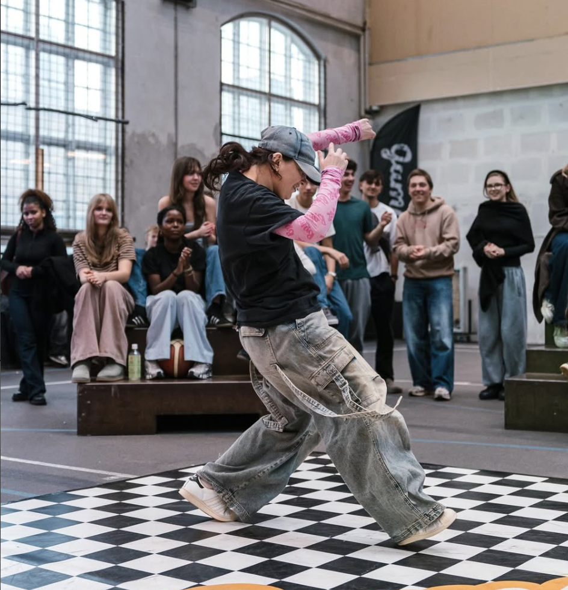
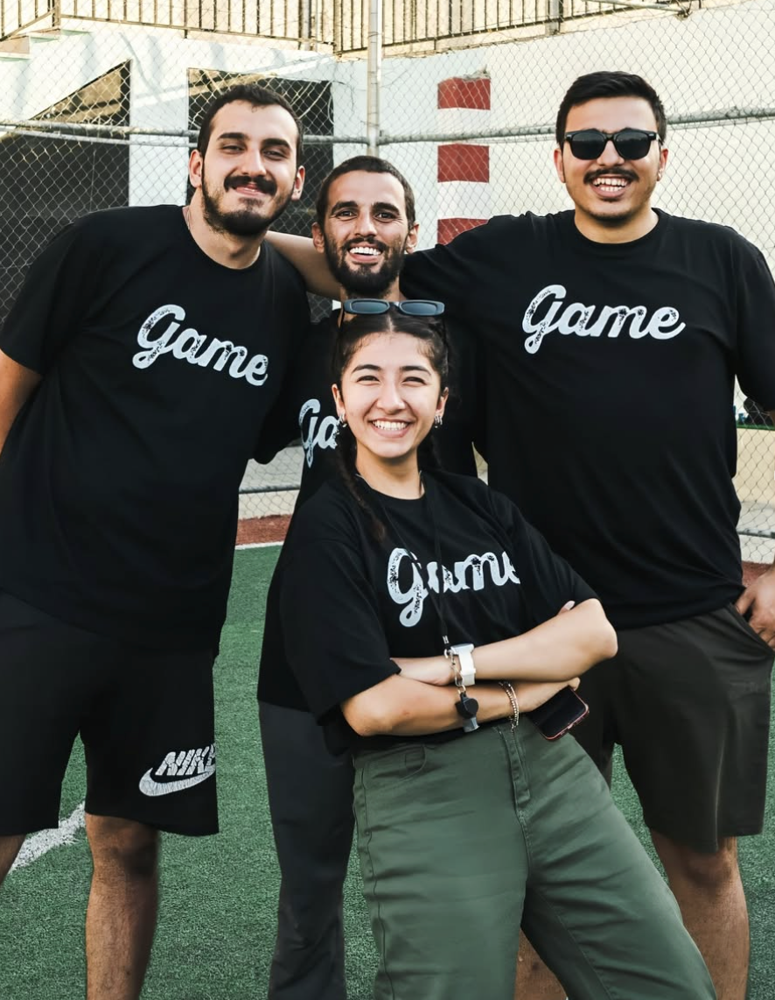
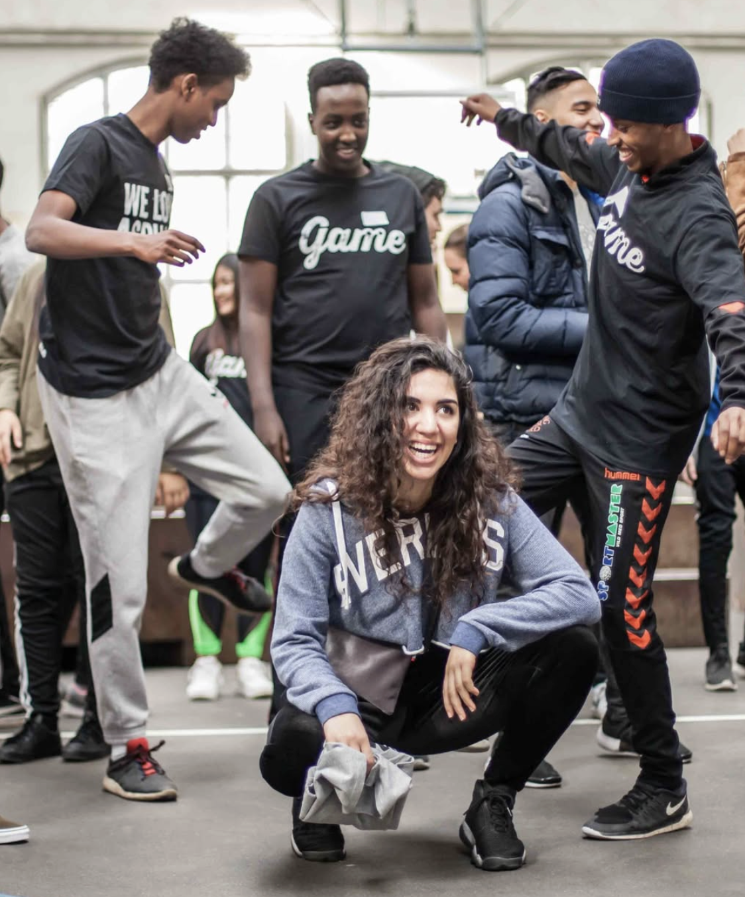

☰

GAME skaber muligheder for unge gennem gadeidræt og streetkultur – og sammen med lokale fællesskaber er vi med til at gøre byens rum levende, trygge og fulde af energi.”
Tilmeld dig som frivillig
GAME arbejder for at skabe stærke fællesskaber gennem streetkultur. Vi uddanner unge som Playmakere og åbner døre til trygge, gratis aktiviteter i nærmiljøet – drevet af fællesskab, frivillighed og et ønske om at give alle unge en fair chance.
Se vores impactVil du gøre en forskel og møde nye mennesker? Find GAME i din by og se, hvordan du kan være med. Start som frivillig – hurtigt og enkelt.
Find din by
Urban Music School er stedet, hvor GAME skruer op for kreativiteten. Hvis du er 16–30 år, kan du dykke ned i DJ’ing, beatmaking eller rap – og udvikle dit talent sammen med andre unge.
Læs mere om Urban Music School